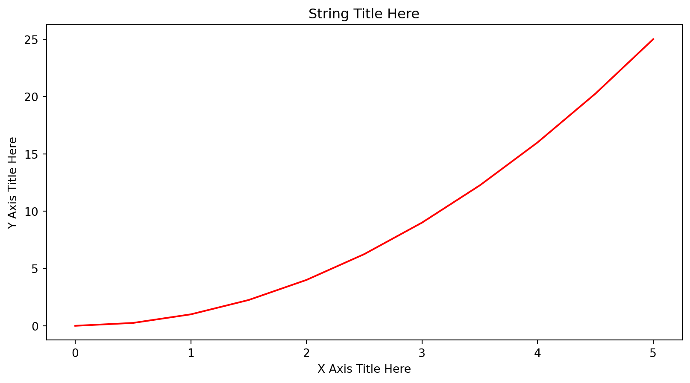
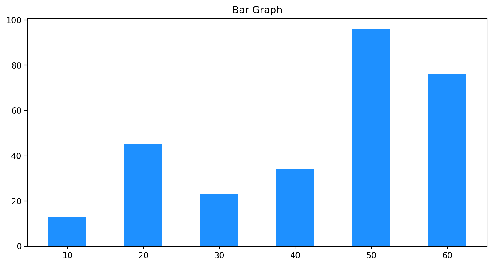
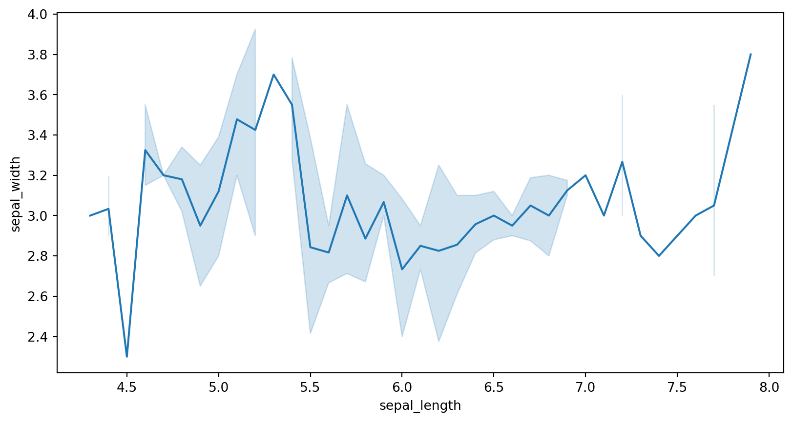

Hello WOrldWe are embarking on a journey, with multiple stops but the destination will be far out. The stops will be areas of expertise and learning that we will have done and practiced but the destination is the progressive accumulation of the learning.
With the ever evolving changing of technology the destination will always be changing.
Have some limited or little knowledge of Microsoft excel functions e.g =sum(C1,C2), though not mandatory it makes it easier to grasp concepts slightly faster. Though if you remember the simple mathematics we do everyday of summing and adding money then you are good :).
Mixed instructional guide, with the presentation but focused on getting more hard skills
Engagements and practice on the fly
Colloquial term data analytics can be coined as both a science and an art. With the science part majorly following statistical/mathematical procedures used, art comes from the different ways and methods someone can use to present and execute the since part of it.
There are various tools/Software/applications can be used for data analysis
Open Source Programming language.First come to use in the early 1990’s and developed by Guido Van Rossum more information here.
Python programming language uses it’s in build command prompt frequently called CLI standing for Command Line Interface, search through windows/MAC program files and you should see Python 3.0.0) there are various versions of python and depending on which one you have installed this will determine the python CLI.
Though you can be able to do everything using this, it doesn’t give an intuitive user interface hence the reason for development of IDE Integrated Development Environment.
IDE is the dashboard similar to car dashboard but the actual software the engine is now python for this case.
Though there are many and the tool of choice is open for use, for now we can focus on using vsCode as this is universal to also other programming languages but if you are interested in a polygot system you can test positron.
Let us check what installations you have
Python being an interpreted high level programming language, making things easier for the programmer. Able to pick up the things very easily.
Let us start with the first code.
Let us use it as a calculator.
Using it as an input
Using comments
Assigning objects to names variables
DT
CustomsRules for variable names
python has keywords this are words that have syntactical use in the program below list even though not fully conclusive.
and continue except global lambda raise yield
as def exec if not return
assert del finally import or try
break elif for in pass while
class else from is print with
Numbers
Integers, floating point numbers and complex numbers falls under Python numbers category.
We can use the
type()function to know which class a variable or a value belongs to and theisinstance()function to check if an object belongs to a particular class.
5 is of type <class 'int'>
2.0 is of type <class 'float'>
(1+2j) is of type <class 'complex'>
(1+2j) is complex number? TrueStrings
sequence of characters used to store and represent text-based information
List
Mutable ordered sequence of items.
List objects provide several methods
Tuples
Immutable ordered sequence of items.Tuples once created cannot be modified.
Sets
Ordered collections of unique items.
set()Dictionary
Arbitrary collection of objects indexed by nearly arbitrary values called keys.
{'a': [1, 2, 3], 'b': [4, 5, 6], 'c': [7, 6, 8]}{'x':42, 'y':3.14, 'z':7} # Dictionary with three items, str keys
{1:2, 3:4} # Dictionary with two items, int keys
{1:'za', 'br':23} # Dictionary with mixed key types
{} # Empty dictionary
dict(x=42, y=3.14, z=7) # Dictionary with three items, str keys
dict([(1, 2), (3, 4)]) # Dictionary with two items, int keys
dict([(1,'za'), ('br',23)]) # Dictionary with mixed key types
dict() # Empty dictionaryMethods
Method: Attributes associated to different objects and data types. As well classes at a broader level
['My', 'first', 'String']Functions
associativity of the operator: L (left-to-right), R (right-to-left), or NA (nonassociative).
| Operator | Description | Associativity |
|---|---|---|
{key:expr,...} |
Dictionary creation | NA |
{ expr ,...} |
Set creation | NA |
[ expr ,...] |
List creation | NA |
( expr ,...) |
Tuple creation or just parentheses | NA |
f ( expr ,...) |
Function call | L |
x [ index : index ] |
Slicing | L |
x [ index ] |
Indexing | L |
x . attr |
Attribute reference | L |
x ** y |
Exponentiation (x to the yth power) | R |
~ x |
Bitwise NOT | NA |
+x, -x |
Unary plus and minus | NA |
x*y, x/y, x//y, x%y |
Multiplication, division, truncating division,remainder | L |
x+y, x-y |
Addition, subtraction | L |
x<<y, x>>y |
Left-shift, right-shift | L |
x & y |
Bitwise AND | L |
x ^ y |
Bitwise XOR | L |
x | y |
Bitwise OR | L |
x<y, x<=y, x>y, x>=y, x<>y (v2 only),x!=y, x==y |
Comparisons (less than, less than or equal, greater than, greater than or equal, inequality, equality)a | NA |
x is y, x is not y |
Identity tests | NA |
x in y, x not in y |
Membership tests | NA |
not x |
Boolean NOT | NA |
x and y |
Boolean AND | L |
x or y |
Boolean OR | L |
x if expr else y |
Ternary operator | NA |
lambda arg,...: expr |
Anonymous simple function | NA |
When our program grows bigger, it is a good idea to break it into different modules.
A module is a file containing Python definitions and statements. Python modules have a filename and end with the extension .py.
Definitions inside a module can be imported to another module or the interactive interpreter in Python. We use the import keyword to do this.
For example, we can import the math module by typing in import math.
Checking paths using sys module
['C:\\Users\\brian\\AppData\\Local\\Programs\\Python\\Python39\\python39.zip', 'C:\\Users\\brian\\AppData\\Local\\Programs\\Python\\Python39\\DLLs', 'C:\\Users\\brian\\AppData\\Local\\Programs\\Python\\Python39\\lib', 'C:\\Users\\brian\\AppData\\Local\\Programs\\Python\\Python39', '', 'C:\\Users\\brian\\AppData\\Local\\Programs\\Python\\Python39\\lib\\site-packages', 'C:\\Users\\brian\\AppData\\Local\\Programs\\Python\\Python39\\lib\\site-packages\\win32', 'C:\\Users\\brian\\AppData\\Local\\Programs\\Python\\Python39\\lib\\site-packages\\win32\\lib', 'C:\\Users\\brian\\AppData\\Local\\Programs\\Python\\Python39\\lib\\site-packages\\Pythonwin']numpy: python module/library specialized in Arrays and Vectorized Computation.
NumPy, short for Numerical Python, is one of the most important foundational packages for numerical computing in Python. Numpy works with array from 1-n dimensional.
array([0, 1, 2, 3, 4, 5, 6, 7, 8, 9])Multidimensional Array
array([[ 1.5, -0.1, 3. ],
[ 0. , -3. , 6.5]])Array descriptors
Pandas : Python module/library enhancing data manipulation tools designed to make data cleaning and analysis fast and convenient in Python. Works intandem with numpy and is the core working under the hood.
0 4
1 7
2 -5
3 3
dtype: int64Main difference of pandas with numpy is that it has indexed values and designed for working with tabular or heterogeneous data.
Pandas relies on dataframes this is excel like data format with rows/records and columns/fields. Which mankes it easy to work with.
Each row stands for an observation and columns here are variables.
| county | headquarters | population | |
|---|---|---|---|
| 0 | Nairobi | Nairobi | 4397073 |
| 1 | Kiambu | Kiambu | 2417735 |
| 2 | Kajiado | Kajiado | 1117840 |
| 3 | Machakos | Machakos | 1421932 |
Checking and investigating the dataframe
Read CSV
Read excel
| Function | Description |
|---|---|
| read_csv | Load delimited data from a file, URL, or file-like object; use comma as default delimiter |
| read_fwf | Read data in fixed-width column format (i.e., no delimiters) |
| read_clipboard | Variation of read_csv that reads data from the clipboard; useful for converting tables from web pages |
| read_excel | Read tabular data from an Excel XLS or XLSX file |
| read_hdf | Read HDF5 files written by pandas |
| read_html | Read all tables found in the given HTML document |
| read_json | Read data from a JSON (JavaScript Object Notation) string representation, file, URL, or file-like object |
| read_feather | Read the Feather binary file format |
| read_orc | Read the Apache ORC binary file format |
| read_parquet | Read the Apache Parquet binary file format |
| read_pickle | Read an object stored by pandas using the Python pickle format |
| read_sas | Read a SAS dataset stored in one of the SAS system’s custom storage formats |
| read_spss | Read a data file created by SPSS |
| read_sql | Read the results of a SQL query (using SQLAlchemy) |
| read_sql_table | Read a whole SQL table (using SQLAlchemy); equivalent to using a query that selects everything in that table using read_sql |
| read_stata | Read a dataset from Stata file format |
| read_xml | Read a table of data from an XML file |
80% of the work done on data is cleaning
| Method | Description |
|---|---|
| dropna | Filter axis labels based on whether values for each label have missing data, with varying thresholds for how much missing data to tolerate. |
| fillna | Fill in missing data with some value or using an interpolation method such as “ffill” or “bfill”. |
| isna | Return Boolean values indicating which values are missing/NA. |
| notna | Negation of isna, returns True for non-NA values and False for NA values. |
Removing Duplicates
The point of visualization is being able to summary data to palatable chunks, easy to read and digest. Quick glances and be able to tell a story.
Humans are visual, absorbing more through image than any other thing. There are very many examples of visuals that have impacted the world I will talk about 3.
Any visual should be able to tell a story either for record purposes and future solutions, predictions.
Matplotlib is the “grandfather” library of data visualization with Python. It was created by John Hunter. He created it to try to replicate MatLab’s (another programming language) plotting capabilities in Python. So if you happen to be familiar with matlab, matplotlib will feel natural to you.
It is an excellent 2D and 3D graphics library for generating scientific figures.
Some of the major Pros of Matplotlib are:
Matplotlib allows you to create reproducible figures programmatically. Let’s learn how to use it! Before continuing this lecture, I encourage you just to explore the official Matplotlib web page: http://matplotlib.org/
Since we are using ipython notebook we need to run %matplotlib inline before running the plot

Bar charts

Pie charts
Seaborn module for visualization
Line Graph
<Axes: xlabel='sepal_length', ylabel='sepal_width'>
Scatter Graph
{kind=link}
{kind=link}
{kind=link}